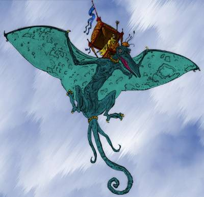

La Haute Terrasse
Dominant la ville, la Haute Terrasse est séparée des autres par une épaisse muraille. C'est le quartier de la noblesse et le centre administratif de la cité. Des prêtres haut-placés dans la hiérarchie des temples et quelques riches magiciens y sont également installés. Ici tout est luxe et puissance, autant dans les vêtements que sur les habitations. N'y entre pas qui veut non plus, un contrôle strict est effectué à l'entrée de la terrasse, et les gardes n'hésitent pas à inoculer un poison à effet lent aux étrangers afin d'être sûrs de les voir ressortir dans les heures qui suivent pour qu'on leur donne l'antidote. La terrasse est divisée en trois zones distinctes : le haut-quartier, le palais, et les Pics des Mages.
La milice de cette terrasse porte des brassards de couleur rouge. Il y a 4 postes de gardes sur la Haute Terrasse, l'un d'entre eux étant le corps d'élite de la Garde Pourpre.
→ Voir la carte interactive de Laelith.
Lieux particuliers
Chariot qui monte. C'est le nom du funiculaire souterrain qui relie la Haute Terrasse au port. Deux chariots, l'un montant tandis que l'autre descend, permettent ainsi de passer en toute discrétion du petit fort sur les quais à la Haute Terrasse. Y transitent des personnalités importantes, des espions, des marchandises, et même le Roi-Dieu.
Compagnie aérienne royale. La CAR utilise les 5 shédras de la cité.
Échelle des Mille marches. Plus ancienne rue de Laelith, c'est l'unique point d'entrée officiel de la Haute Terrasse. Un poste de garde y est installé. Fouille automatique, et on n'hésite pas à inoculer un poison à effet lent à toutes personnes suspectes, obligeant ainsi ceux-ci à revenir au poste de garde à leur sortie du quartier, pour un nouveau contrôle.
Enclos des Varans sacrés. Un couple de lézards géants fut ramené ici il y a des siècles par un Roi-Dieu d'une campagne en Egonzasthan. Ses successeurs continuent d'honorer cet épisode de l'histoire de la cité en protégeant les descendants de ces animaux, qui vivent pratiquement en permanence cachés dans les grottes installés dans leur enclos, une enceinte en pierre de 3 mètres de haut.
Esplanade de la Demi-Lune. C'est sur le parvis du palais que le Roi-Dieu accorde ses rares audiences publiques. Ces jours-là, l'esplanade se remplie d'une foule bigarrée qui mélange pauvres et nobles.
Jardins des Courtisans. Lieu de promenade romantique par excellence pour tous les nobles de la haute Terrasse, jeunes et moins jeunes. Très joli point de vue sur la cité.
Jardins du Palais. La partie nord de ces jardins abritait autrefois un grand zoo, mais celui-ci a été fermé il y a de nombreuses années, et suite à cela toute la zone a été complètement délaissée et abandonnée. La végétation a alors tout envahi, et ces jardins ressemblent de nos jours plus à une jungle qu'à autre chose.
Palais du Roi-Dieu. C'est là que vit l'actuel Roi-Dieu, Taephanerys XIV, dans son palais aux 5000 pièces, dont moins de 2000 sont en réalité occupées. La palais accueille nombre de prêtres effectuant des travaux administratifs, les temples étant réservés aux cultes, et non pas au tâches administratives.
Pics des Mages. Voir la page consacrée pour plus de détails.
- Tour mineure (Académie tolérée de magie. Voir la page consacrée pour plus de détails).
- Tour majeure (archimages)
- Tour de l'échec (magie noire)
Prisons et tribunaux. Voir la page consacrée pour plus de détails.
Sanctuaire du Divin. Situé au sud du palais, c'est le cimetière des Rois-Dieux. Quelques illuminés aiment s'y promener la nuit, bien que cela soit interdit et que le lieu ait la réputation d'être hanté.
Auberges et tavernes
Estaminet de la Marotte [impasse du petit Clerc]. Situé face à la prison, cet établissement est la propriété du baron Golthron d'Aeschner. Il est tenu par le vieux Madhur Tiho, un ex-détenu.
Personnalités
| Nom | Description | Lieu et Occupation |
|---|---|---|
| Lorlen | Adulte | Académie tolérée de magie, administrateur |
| Pynfle Sympony | Gnome, adulte | Académie tolérée de magie, chef bibliothécaire |
| Sonea | Adulte | Académie tolérée de magie, directrice |
| Akkarin | Vieux | Académie tolérée de magie, doyen de l'académie |
| Rothen | Adulte, en couple avec Sonea | Académie tolérée de magie, professeur |
| Madhur Tiho | Vieux | Aubergiste (estaminet de la Marotte) |
| Lamb | Adulte | Fouineur |
| Harafim | Vieux | Mendiant |
| Cyntil Gotfram | Jeune, fille de Silmaric | Noble |
| Grolla Gotfram | Adulte, femme de Silmaric | Noble |
| Loria Gotfram | Jeune, fille de Silmaric | Noble |
| Rilmaric Gotfram | Jeune, fils de Silmaric | Noble |
| Golthron d'Aeschner | Adulte | Noble, baron, propriétaire de l'estaminet de la Marotte |
| Laeticia Lunalia | Adulte, amante de Gildas d'Elnor | Noble, baronne des Quatre Marchands |
| Silmaric Gotfram | Adulte | Noble, duc de l'échelle de la Comédie |
| Sirdiam | Adulte | Noble, duc, Chambellan général du Palais |
| Gonthar | Adulte, frêre de Zonthar | Palais royal, Ezmer de la Garde Pourpre |
| Aristid le Saint | Adulte | Palais royal, Merker de la Garde Pourpre |
| Teaphanerys XIV | Vieux | Palais royal, Roi-Dieu |
| Krator Zomberlash | Adulte | Pics des Mages, marchand de créatures étranges et magiques |
| Barken | Adulte | Prisons, ezmer de la Haute Terrasse et directeur des prisons |
| Olaf | Adulte | Serviteur de la famille Gotfram |
| Chourg | Adulte | Tribunaux, bourreau de la cour commune |
| Gartien l'Écriveur | Adulte | Tribunaux, chef des greffiers |
| Erkiel | Vieux | Tribunaux, doyen des juges de la cour commune |
| Agrala | Vieux | Tribunaux, juge de la salle spéciale |
| Dorgar le Hâbleur | Adulte | Tribunaux, procureur général à la cour commune |
Les shédras
Animaux préhistoriques possédants des ailes d'une envergure de plus de 6 mètres chacune, les shédras appartiennent à la Compagnie aérienne royale (la CAR) et il est fréquent de les voir voler dans le ciel de la cité, autant pour des missions de surveillance que pour transporter rapidement, d'un bout à l'autre de la ville, des nobles ou de hautes personnalités. De plus, les shédras sont capables de porter des charges dépassants les 300 kg. On n'a jamais vu mourir un shédra de mort naturelle, mais, aujourd'hui, la CAR n'en possède plus que cinq spécimens.